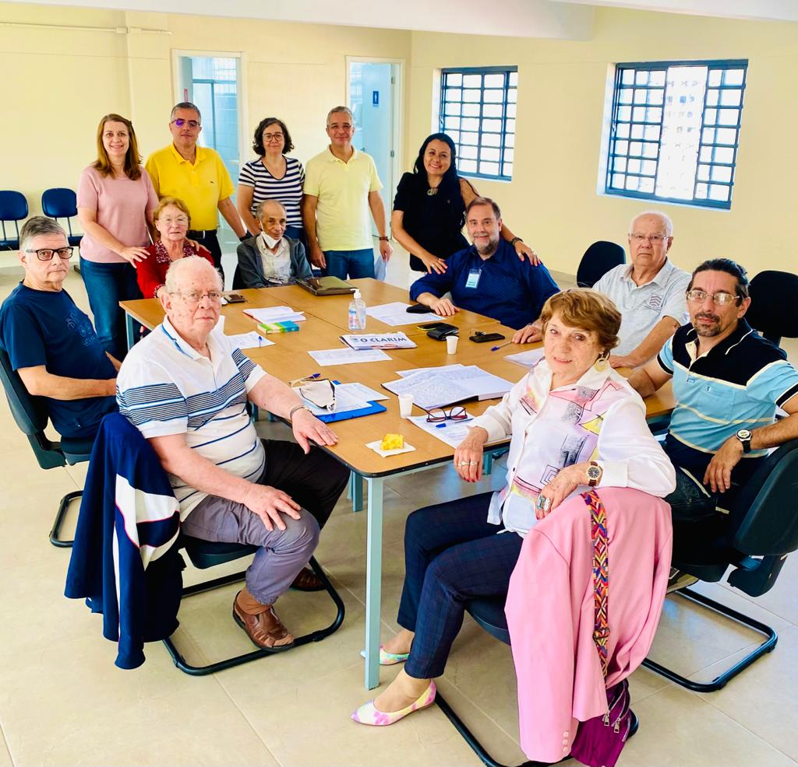
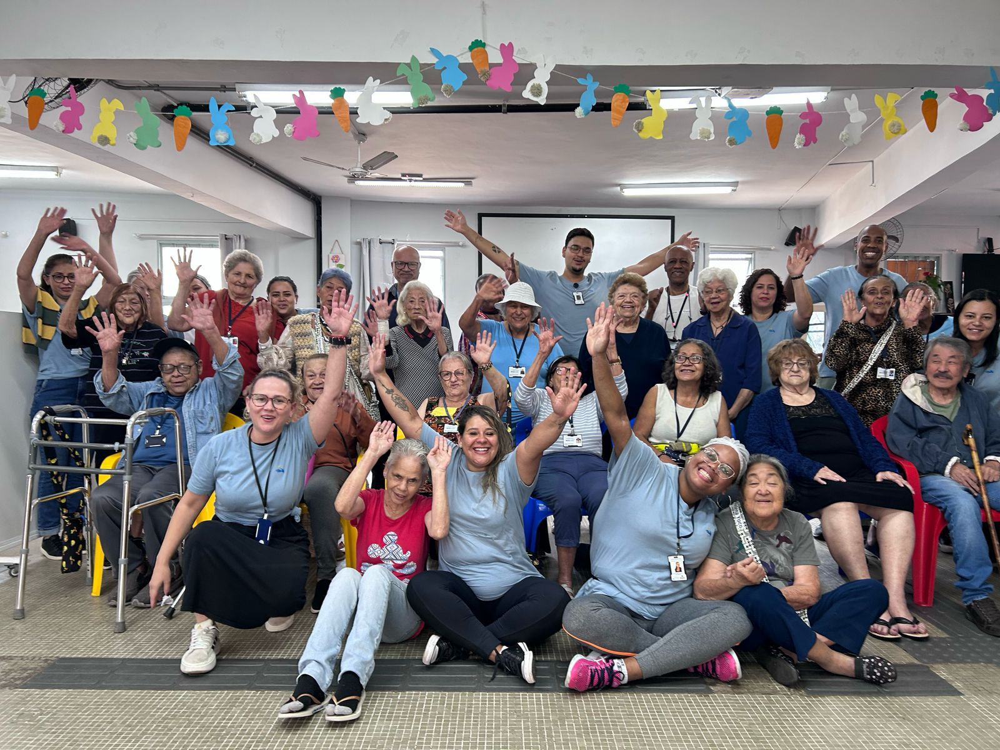
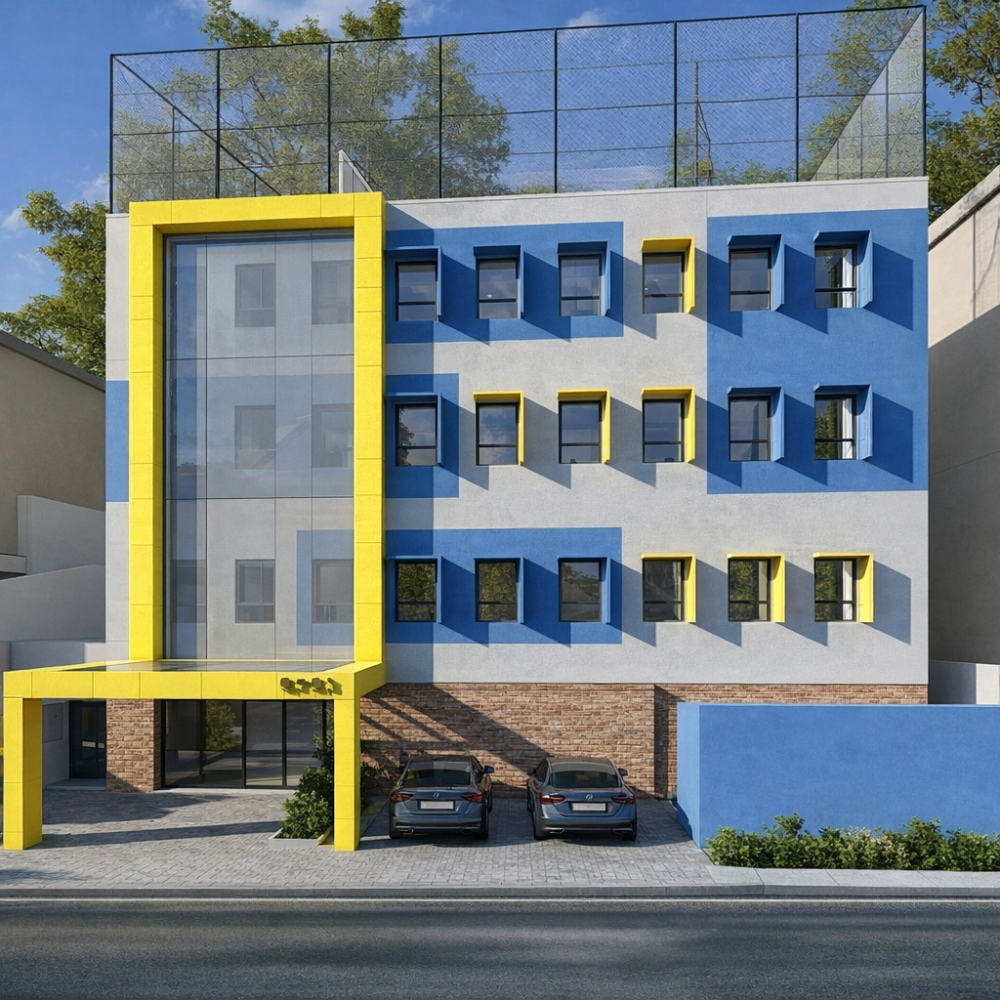
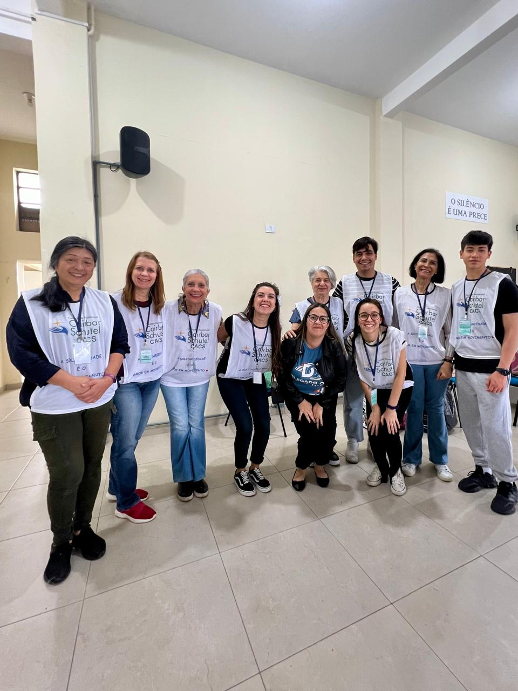
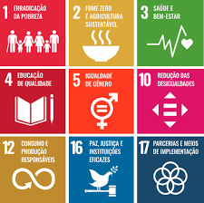
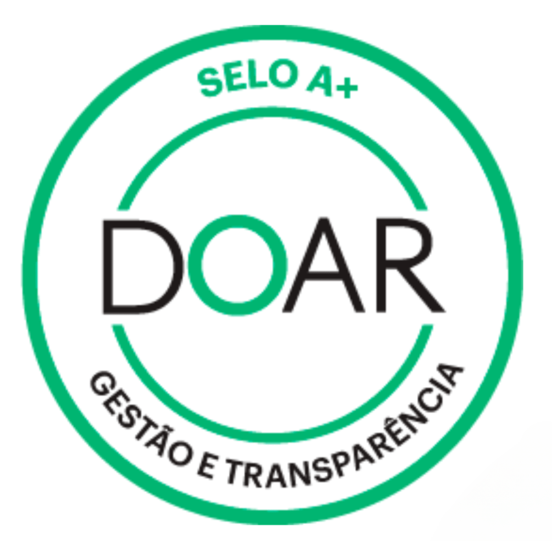

63 anos de um trabalho de amor!
O CACS | Complexo Assistencial Cairbar Schutel, associação filantrópica sem fins lucrativos, foi criado em 17 de janeiro de 1963 movido pela busca de uma sociedade mais justa e com mais oportunidades.
Saiba maisNosso Impacto
ANOS DE HISTÓRIA
CRIANÇAS E ADOLESCENTES ATENDIDOS
IDOSOS PASSARAM PELO CDI
DOAÇÃO DE ALIMENTOS
PESSOAS IMPACTADAS POR ANO
NÚMERO DE PROJETOS
Acompanhe nossos últimos posts

CACS
O CACS | Complexo Assistencial Cairbar Schutel trabalha para resgatar a dignidade e fomentar a autonomia de pessoas em situação de vulnerabilidade.
Saiba maisPrograma de Acolhimento
O Acolhimento Psicológico oferece atendimento gratuito para pessoas em situação de vulnerabilidade social em São Paulo, com psicólogos voluntários qualificados.
Um espaço seguro para cuidar da saúde mental e promover bem-estar emocional na comunidade.
Saiba mais

CDI - Centro Dia para Idosos
O Centro Dia para Idosos Dr. Ricardo oferece proteção social integral, estimulação cognitiva e convivência para idosos em vulnerabilidade social em São Paulo, promovendo envelhecimento ativo, autonomia e dignidade através de acompanhamento multidisciplinar.


CACS Bilíngue
O CACS Bilíngue oferece aulas gratuitas de inglês para crianças e adolescentes em situação de vulnerabilidade social em São Paulo, ampliando horizontes, desenvolvendo talentos e criando oportunidades de futuro através de educação de qualidade.
Saiba maisCACS Florescer
O CACS Florescer oferece capacitação em costura criativa e upcycling para mulheres em situação de vulnerabilidade social em São Paulo, promovendo autonomia financeira, desenvolvimento de habilidades e transformação através da economia circular.
Saiba mais
 15.50.28_09ae5eb0.jpg)
 17.05.04_b517889e.jpg)
Brechó Solidário
Nosso brechó é uma das principais fontes de recursos para a manutenção dos nossos projetos sociais. Aqui você encontra roupas, calçados e acessórios de qualidade por preços muito acessíveis.
Toda a renda é revertida para as famílias que apoiamos. Venha nos visitar, faça suas compras de forma sustentável e ainda nos ajude a transformar vidas!
Venha nos visitar

CEDESP
O CEDESP será um centro de capacitação profissional dedicado ao desenvolvimento social e produtivo de adolescentes e jovens a partir de 15 anos em situação de vulnerabilidade em São Paulo, com previsão de implantação em 2027.
Saiba mais.jpg)
Campanha Contra a Fome
A Campanha Contra a Fome oferece segurança alimentar integral para famílias em situação de vulnerabilidade social em São Paulo, distribuindo alimentos essenciais e promovendo dignidade através do acesso ao direito fundamental de se alimentar.
Saiba maisEventos no CACS
Nossos eventos são momentos de muita alegria, união e solidariedade. Desde os tradicionais almoços beneficentes até o famoso Pechinhão, cada encontro fortalece nossos laços com a comunidade e nos permite gerar renda para financiar os nossos projetos.
Participar
Campanha Contra Fome
.JPG)
Capoeira dos Idosos

Almoços Beneficentes
Faça parte dessa causa
Fale Conosco
Informações
ENDEREÇO:
Rua Francisco Preto, 213 - Vila Morse, SP
CEP: 05623-010
CNPJ:
62.909.114/0001-06
CONTATO:
(11) 3742-0516
contato@cairbarschutel.org

